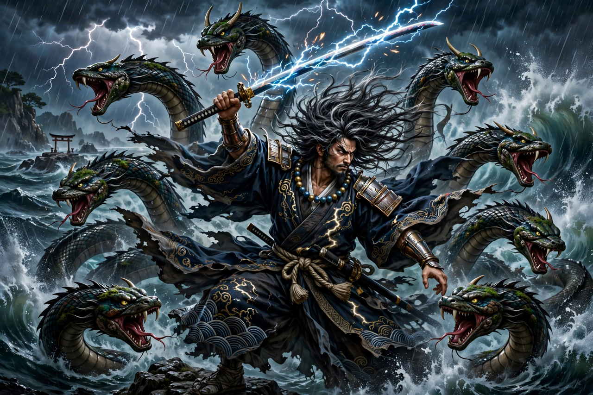

From Wikipedia, the free encyclopedia
| Susanoo-no-Mikoto | |
|---|---|
| Affiliation | Shinto; god of the sea and storms |
| Parents | Born of Izanagi (from his nose, in the Kojiki account) |
| Siblings | Amaterasu, Tsukuyomi |
| Known for | Slaying the serpent Yamata no Orochi; finding the sword Kusanagi |
| Realm | Originally the sea plain; later associated with Izumo |

Susanoo (Japanese: 須佐之男命, Susanoo-no-Mikoto) is the tempestuous Shinto god of the sea and storms, younger brother of the sun goddess Amaterasu and the moon god Tsukuyomi. Born, in the Kojiki account, from the nose of his father Izanagi as the creator god purified himself after escaping the land of the dead, Susanoo was assigned the sea plain as his domain — but his violent grief and destructive rages led to his banishment from heaven, and his earthly adventures, above all the slaying of the serpent Yamata no Orochi, made him one of the most vivid figures of Japanese mythology.
Refusing his domain and longing for his dead mother, Susanoo visited Amaterasu in the High Plain of Heaven; suspicious of his intentions, she received him armed, and their contest of oath and child-bearing ended in dispute. Susanoo then ran riot: he broke down the ridges between the rice fields, fouled the sacred hall, and flung a flayed horse through the roof of the weaving hall, killing one of Amaterasu's attendants. The sun goddess hid herself in the Heavenly Rock Cave, plunging the world into darkness, until the gods lured her out. Susanoo was fined, his beard and nails cut, and he was expelled from heaven.
Descending to Izumo, Susanoo found an elderly couple mourning: the eight-headed, eight-tailed serpent Yamata no Orochi had devoured seven of their eight daughters and was coming for the last, Kushinadahime. Susanoo set out eight vats of strong sake; the serpent drank with all its heads and slept, and he cut it to pieces — finding in its middle tail the great sword Ame-no-Murakumo, later called Kusanagi-no-Tsurugi, which he presented to Amaterasu in reconciliation. He married Kushinadahime and built a palace at Suga, composing, tradition says, the first poem in Japanese.
Susanoo is enshrined at shrines including Yasaka Jinja in Kyoto (as patron against plague, merged with the god Gozu Tennō in the Gion cult) and the shrines of Izumo, and his descendants — notably Ōkuninushi — rule the earthly realm in the Izumo cycle of myths. His character, violent and remorseful, destructive and heroic, makes him a favourite of modern retellings in manga, anime and games.
Shinto · Amaterasu · Izanagi · Japanese mythology · Kami